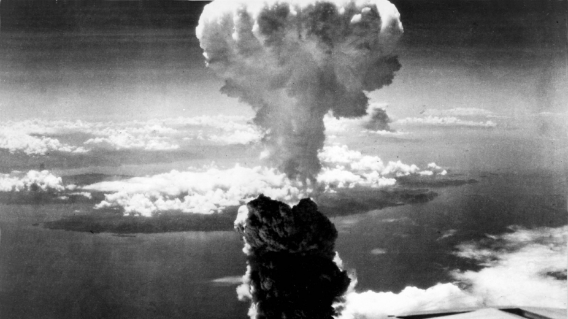
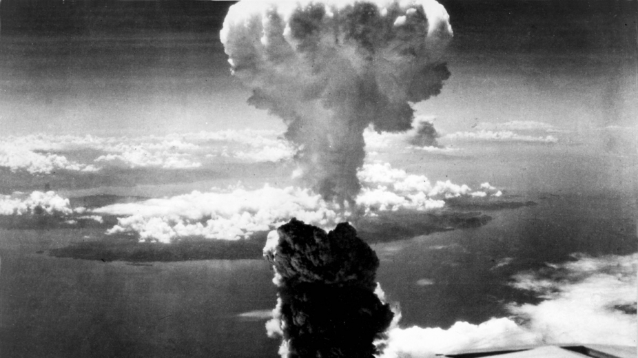

proklamasi kemerdekaan Indonesia terjadi pada tanggal 17 Agustus 1945 , ketika bangsa Indonesia secara resmi menyatakan kemerdekaannya. Meskipun kekalahan Jepang dalam Perang Dunia II menjadi salah satu latar belakang penting yang mempercepat proses tersebut, kemerdekaan Indonesia bukanlah sebuah hadiah yang diberikan langsung oleh Jepang.
Lanjut
Pada tanggal 6 Agustus 1945, selama Perang Dunia II, pembom B-29 Amerika menjatuhkan bom atom pertama di dunia yang dinamakan Little Boy di atas kota Hiroshima, Jepang. Ledakan tersebut langsung menewaskan sekitar 80.000 orang dan puluhan ribu lainnya juga meninggal kemudian karena paparan radiasi.
Lanjut 

Pada 9 Agustus 1945, Amerika Serikat (AS) kembali menjatuhkan bom atom di Nagasaki, Jepang. Serangan bom atom di Nagasaki terjadi tiga hari setelah bom di Hiroshima, Jepang. Hiroshima dan Nagasaki merupakan dua kota penting bagi militer Jepang. Hiroshima adalah markas militer Jepang, sehingga dinilai tepat menjadi target utama untuk melemahkan negara ini. Sementara Nagasaki, sebenarnya bukan target awal pengeboman. Kota ini menjadi alternatif dari Kyoto, setelah pidato Presiden AS Harry S Truman pada 25 Juli 1945. Kala itu, Nagasaki menjadi pangkalan militer angkatan laut dan selam Jepang yang cukup kuat. Hingga pada 9 Agustus 1945, kota ini pun dijatuhi bom atom plutonium yang disebut "Fat Man", inilah yang menyebabkan kalahnya Jepang pada perang dunia ke 2.
Lanjut Lanjut